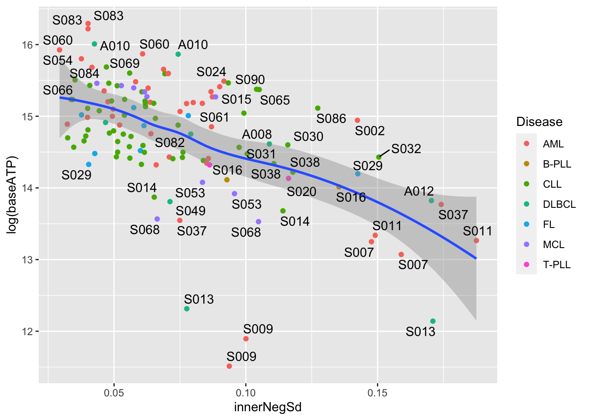
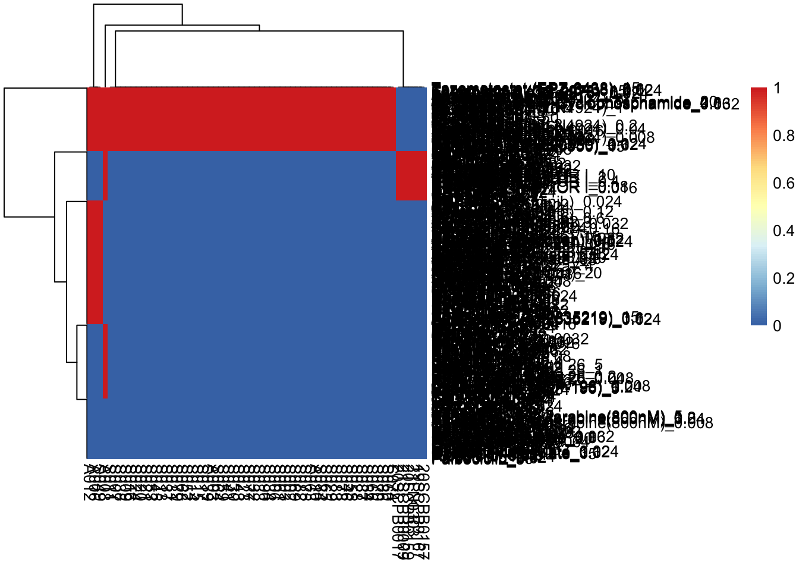
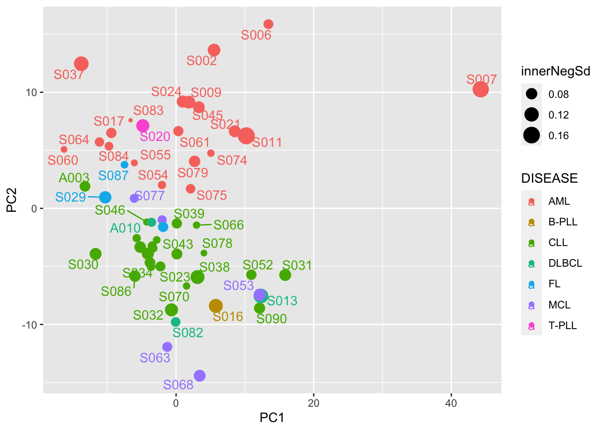
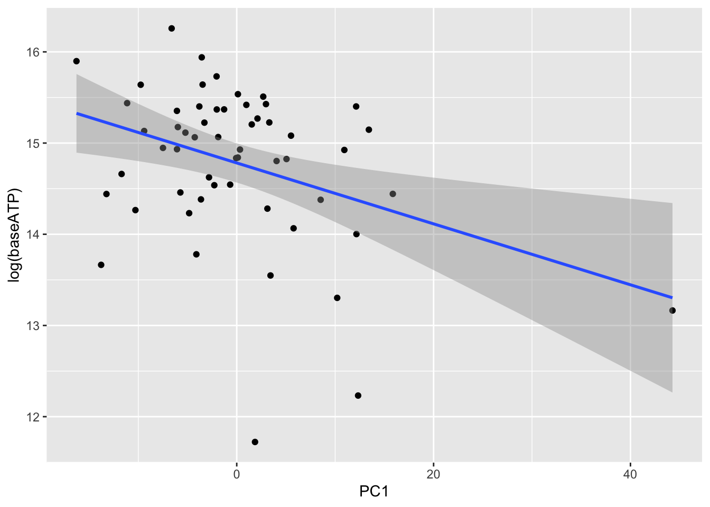
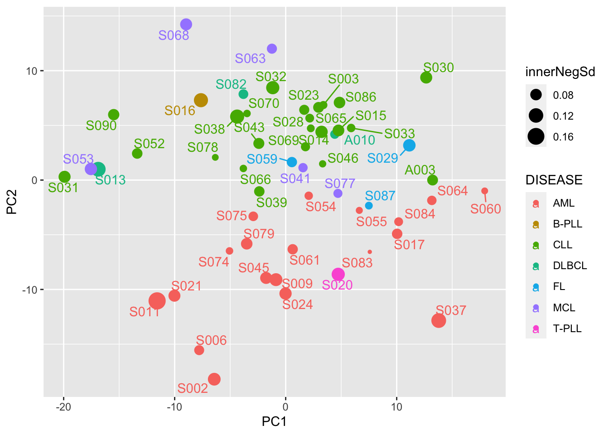
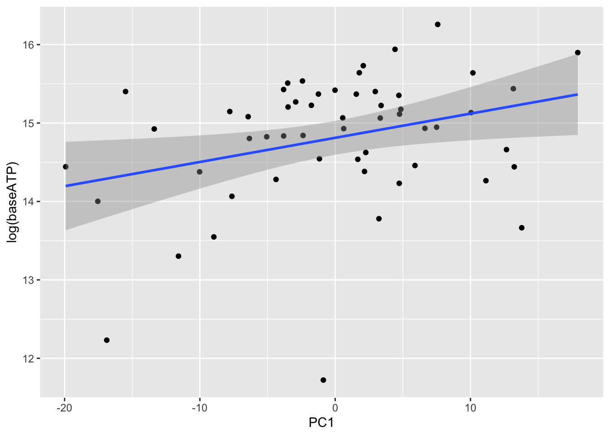

Last updated: 2024-03-14
Checks: 5 1
Knit directory: SMARTrial/analysis/
This reproducible R Markdown analysis was created with workflowr (version 1.7.0). The Checks tab describes the reproducibility checks that were applied when the results were created. The Past versions tab lists the development history.
Great job! The global environment was empty. Objects defined in the global environment can affect the analysis in your R Markdown file in unknown ways. For reproduciblity it’s best to always run the code in an empty environment.
The command set.seed(20220425) was run prior to running
the code in the R Markdown file. Setting a seed ensures that any results
that rely on randomness, e.g. subsampling or permutations, are
reproducible.
Great job! Recording the operating system, R version, and package versions is critical for reproducibility.
Nice! There were no cached chunks for this analysis, so you can be confident that you successfully produced the results during this run.
Great job! Using relative paths to the files within your workflowr project makes it easier to run your code on other machines.
Tracking code development and connecting the code version to the
results is critical for reproducibility. To start using Git, open the
Terminal and type git init in your project directory.
This project is not being versioned with Git. To obtain the full
reproducibility benefits of using workflowr, please see
?wflow_start.
load("../data/smartData.RData")
smartScreen <- mutate_if(smartScreen, is.factor, as.character)
#get overlapped samples
overPat <- intersect(protSmart$SMART_ID, smartScreen$patientID)proteomic samples that do not have drug screen data
#proteomic samples that do not have drug screen data
smps <- protSmart$SMART_ID[! protSmart$SMART_ID %in% overPat]
smps[1] "21SCPB0009" "20SCPB0159" "20SCPB0157" "20SCPB0017" "21LN0303"
[6] "19SCPB0167"Those are the samples only have drug screen data.
Get sample IDs for drug screen samples
smartScreen <- separate(smartScreen, sampleID, into = c("a","smpID","b"), sep = "_", remove = FALSE)
smps %in% smartScreen$smpID[1] TRUE TRUE TRUE TRUE TRUE TRUENow all the samples can be found.
For those 5 samples, change their SMART_ID (PatientID) to sampleID
smartScreen <- smartScreen %>% mutate(patientID = ifelse(smpID %in% smps, smpID, patientID))Wether all the proteomic samples have screen data?
#get overlapped samples
all(protSmart$SMART_ID %in% smartScreen$patientID)[1] TRUEscreenData <- filter(smartScreen, patientID %in% protSmart$SMART_ID) %>%
select(-a,-b,-smpID)negPlate <- filter(screenData, Drug == "DMSO", !str_detect(well, "^[ABOP]|(01|02|23|24)$"))
sdNeg <- group_by(negPlate, plateID) %>% summarise(sdVal = sd(normVal))
meanNeg <- group_by(negPlate, plateID) %>% summarise(meanVal = mean(val))viabTab <- mutate(screenData,
innerNegSd = sdNeg[match(plateID, sdNeg$plateID),]$sdVal,
baseATP = meanNeg[match(plateID, meanNeg$plateID),]$meanVal) %>%
arrange(innerNegSd) %>%
filter(Drug!= "DMSO") %>%
distinct(patientID, Drug, Concentration, .keep_all = TRUE) %>%
mutate(drugConc = paste0(Drug,"_",Concentration)) plotTab <- distinct(viabTab, plateID, .keep_all = TRUE) %>%
mutate(Disease = protSmart[,match(patientID,protSmart$SMART_ID)]$DISEASE) %>% as_tibble()
ggplot(plotTab, aes(x=innerNegSd, y=log(baseATP))) +
geom_point(aes(color = Disease)) +
geom_smooth() +
ggrepel::geom_text_repel(aes(label= patientID))`geom_smooth()` using method = 'loess' and formula = 'y ~ x'Warning: ggrepel: 81 unlabeled data points (too many overlaps). Consider
increasing max.overlaps
viabMat <- viabTab %>%
select(patientID, drugConc, normVal) %>%
pivot_wider(names_from = patientID, values_from = normVal) %>%
column_to_rownames("drugConc") %>% as.matrix()naMat <- viabMat
naMat[is.na(viabMat)] <- 1
naMat[!is.na(viabMat)] <- 0
pheatmap::pheatmap(naMat)
Remove drug that have too many missing values
viabMat <- viabMat[rowMeans(naMat) < 0.5, ]
viabTab <- filter(viabTab, drugConc %in% rownames(viabMat))Only use the complete measurement for PCA
viabMat.complete <- viabMat[,complete.cases(t(viabMat))] pcRes <- prcomp(t(viabMat.complete),center = TRUE, scale. = TRUE)
sdNegAnno <- distinct(viabTab, patientID, innerNegSd) %>% group_by(patientID) %>% summarise(innerNegSd = mean(innerNegSd))
baseATPAnno <- distinct(viabTab, patientID, baseATP) %>% group_by(patientID) %>% summarise(baseATP = mean(baseATP))
pcTab <- pcRes$x[,1:20] %>%
as_tibble(rownames = "SMART_ID") %>%
left_join(colData(protSmart) %>% as_tibble()) %>%
left_join(sdNegAnno, by = c(SMART_ID = "patientID")) %>%
left_join(baseATPAnno, by = c(SMART_ID = "patientID"))Joining, by = "SMART_ID"ggplot(pcTab, aes(x=PC1, y=PC2, color = DISEASE)) +
geom_point(aes(size = innerNegSd)) +
ggrepel::geom_text_repel(aes(label = SMART_ID))Warning: ggrepel: 9 unlabeled data points (too many overlaps). Consider
increasing max.overlaps
ggplot(pcTab, aes(x=PC1, y=log(baseATP))) +
geom_point() +
geom_smooth(method = "lm")`geom_smooth()` using formula = 'y ~ x'
S007 looks like an outlier in PCA, is a samples with inner negative control SD > 0.15, better to remove it.
viabTab <- filter(viabTab, patientID != "S007")
viabMat.complete <- viabMat.complete[,colnames(viabMat.complete) %in% viabTab$patientID]pcRes <- prcomp(t(viabMat.complete),center = TRUE, scale. = TRUE)
sdNegAnno <- distinct(viabTab, patientID, innerNegSd) %>% group_by(patientID) %>% summarise(innerNegSd = mean(innerNegSd))
baseATPAnno <- distinct(viabTab, patientID, baseATP) %>% group_by(patientID) %>% summarise(baseATP = mean(baseATP))
pcTab <- pcRes$x[,1:20] %>%
as_tibble(rownames = "SMART_ID") %>%
left_join(colData(protSmart) %>% as_tibble()) %>%
left_join(sdNegAnno, by = c(SMART_ID = "patientID")) %>%
left_join(baseATPAnno, by = c(SMART_ID = "patientID"))Joining, by = "SMART_ID"ggplot(pcTab, aes(x=PC1, y=PC2, color = DISEASE)) +
geom_point(aes(size = innerNegSd)) +
ggrepel::geom_text_repel(aes(label = SMART_ID))Warning: ggrepel: 1 unlabeled data points (too many overlaps). Consider
increasing max.overlaps ##### Does PC1 correlate with overall viability?
ggplot(pcTab, aes(x=PC1, y=log(baseATP))) +
geom_point() +
geom_smooth(method = "lm")`geom_smooth()` using formula = 'y ~ x'
#Per-concentration
seDrug_conc <- jyluMisc::tidyToSum(viabTab, rowID = "drugConc", colID = "patientID", values = c("normVal", "normVal.cor"),
annoRow = c("Drug","Concentration", "drugConc", "concIndex","Target","Pathway"),
annoCol = c("patientID"))
viabTab.auc <- distinct(viabTab, patientID, Drug, .keep_all = TRUE)
#AUC
seDrug_auc <- jyluMisc::tidyToSum(viabTab.auc, rowID = "Drug", colID = "patientID", values = c("normVal_auc", "normVal.cor_auc"),
annoRow = c("Drug","Target","Pathway"),
annoCol = c("patientID"))
save(seDrug_auc, seDrug_conc, viabTab, file = "../output/seDrug.RData")
sessionInfo()R version 4.2.0 (2022-04-22)
Platform: x86_64-apple-darwin17.0 (64-bit)
Running under: macOS Big Sur/Monterey 10.16
Matrix products: default
BLAS: /Library/Frameworks/R.framework/Versions/4.2/Resources/lib/libRblas.0.dylib
LAPACK: /Library/Frameworks/R.framework/Versions/4.2/Resources/lib/libRlapack.dylib
locale:
[1] en_US.UTF-8/en_US.UTF-8/en_US.UTF-8/C/en_US.UTF-8/en_US.UTF-8
attached base packages:
[1] stats4 stats graphics grDevices utils datasets methods
[8] base
other attached packages:
[1] forcats_0.5.1 stringr_1.4.1
[3] dplyr_1.0.9 purrr_0.3.4
[5] readr_2.1.2 tidyr_1.2.0
[7] tibble_3.1.8 ggplot2_3.4.1
[9] tidyverse_1.3.2 SummarizedExperiment_1.26.1
[11] Biobase_2.56.0 GenomicRanges_1.48.0
[13] GenomeInfoDb_1.32.2 IRanges_2.30.0
[15] S4Vectors_0.34.0 BiocGenerics_0.42.0
[17] MatrixGenerics_1.8.1 matrixStats_0.62.0
loaded via a namespace (and not attached):
[1] readxl_1.4.0 backports_1.4.1 fastmatch_1.1-3
[4] drc_3.0-1 jyluMisc_0.1.5 workflowr_1.7.0
[7] igraph_1.3.4 shinydashboard_0.7.2 splines_4.2.0
[10] BiocParallel_1.30.3 TH.data_1.1-1 digest_0.6.30
[13] htmltools_0.5.4 fansi_1.0.3 magrittr_2.0.3
[16] googlesheets4_1.0.0 cluster_2.1.3 tzdb_0.3.0
[19] limma_3.52.2 modelr_0.1.8 sandwich_3.0-2
[22] piano_2.12.0 colorspace_2.0-3 rvest_1.0.2
[25] ggrepel_0.9.1 haven_2.5.0 xfun_0.31
[28] crayon_1.5.2 RCurl_1.98-1.7 jsonlite_1.8.3
[31] survival_3.4-0 zoo_1.8-10 glue_1.6.2
[34] survminer_0.4.9 gtable_0.3.0 gargle_1.2.0
[37] zlibbioc_1.42.0 XVector_0.36.0 DelayedArray_0.22.0
[40] car_3.1-0 abind_1.4-5 scales_1.2.0
[43] pheatmap_1.0.12 mvtnorm_1.1-3 DBI_1.1.3
[46] relations_0.6-12 rstatix_0.7.0 Rcpp_1.0.9
[49] plotrix_3.8-2 xtable_1.8-4 km.ci_0.5-6
[52] DT_0.23 htmlwidgets_1.5.4 httr_1.4.3
[55] fgsea_1.22.0 gplots_3.1.3 RColorBrewer_1.1-3
[58] ellipsis_0.3.2 pkgconfig_2.0.3 farver_2.1.1
[61] sass_0.4.2 dbplyr_2.2.1 utf8_1.2.2
[64] tidyselect_1.1.2 labeling_0.4.2 rlang_1.0.6
[67] later_1.3.0 visNetwork_2.1.0 munsell_0.5.0
[70] cellranger_1.1.0 tools_4.2.0 cachem_1.0.6
[73] cli_3.4.1 generics_0.1.3 broom_1.0.0
[76] evaluate_0.15 fastmap_1.1.0 yaml_2.3.5
[79] knitr_1.39 fs_1.5.2 survMisc_0.5.6
[82] caTools_1.18.2 nlme_3.1-158 mime_0.12
[85] slam_0.1-50 xml2_1.3.3 compiler_4.2.0
[88] rstudioapi_0.13 ggsignif_0.6.3 marray_1.74.0
[91] reprex_2.0.1 bslib_0.4.1 stringi_1.7.8
[94] highr_0.9 lattice_0.20-45 Matrix_1.5-4
[97] KMsurv_0.1-5 shinyjs_2.1.0 vctrs_0.5.2
[100] pillar_1.8.0 lifecycle_1.0.3 jquerylib_0.1.4
[103] data.table_1.14.8 cowplot_1.1.1 bitops_1.0-7
[106] httpuv_1.6.6 R6_2.5.1 promises_1.2.0.1
[109] KernSmooth_2.23-20 gridExtra_2.3 codetools_0.2-18
[112] MASS_7.3-58 gtools_3.9.3 exactRankTests_0.8-35
[115] assertthat_0.2.1 rprojroot_2.0.3 withr_2.5.0
[118] multcomp_1.4-19 GenomeInfoDbData_1.2.8 parallel_4.2.0
[121] mgcv_1.8-40 hms_1.1.1 grid_4.2.0
[124] rmarkdown_2.14 carData_3.0-5 googledrive_2.0.0
[127] ggpubr_0.4.0 git2r_0.30.1 maxstat_0.7-25
[130] sets_1.0-21 shiny_1.7.4 lubridate_1.8.0